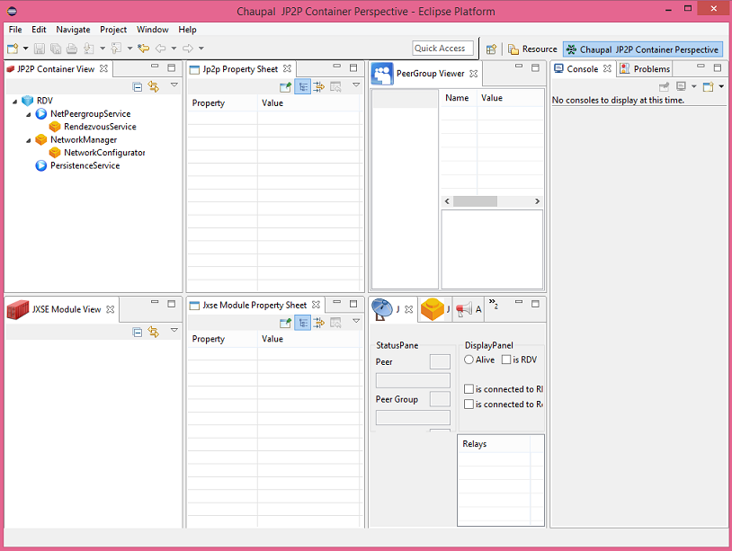

1.2. Creating a Simple
Chaupal Project
So far we have created an RCP project with the Chaupal JP2P project.
Now we add a new plugin project in the same fashion as we did earlier:
File -> New ->
Plugin Project
When the wizard opens, we select an '
OSGI Framework' project
and follow the guidelines of the wizard until certain templates can be
selected. Give the bundle a name, such as:
org.<your
organisation>.rdv
where you fill in the organisation of your choosing.
In the list you can see two JXSE bundle options. Select the RDV option
and press 'finish'.
We now have two bundles in our workspace. Time to see what this may
achieve!
In order to see the differences, we first need to make a few changes
to the standard launch configuration. Open the launcher:
Run -> Debug
Configurations
and select the 'Plugins' tab. Here you see a list of all the bundles
that are activated when you run your application. By default, all the
plugins and features are activated. For now, we respect this option,
but we change the
launch with option to run with the
'bundles selected below'. Then we set the 'auto-start' option of the
new bundle to 'true'. Next we have to set the auto-start option
to 'true'' for:
- net.jxse.jetty
- net.jxse.netty
- net.jxse.osgi.platform
Include the following bundles to activate the console:
- org.eclipse.equinox.console
- org.apache.felix.gogo.command
- org.apache.felix.gogo.runtime
We 'apply' the changes and run the launcher, but when the IDE opens,
nothing has changed!
We need to make one modification in the Activator class that was
generated when the new bundle was created. Change the constructor as
follows:
public Activator(){
super( S_PLUGIN_ID, DeveloperModes.DEBUG ) {
}
Relaunch the application. If all went well, you should be seeing
something like this:

Your first Chaupal JP2P project is up and running!
You may ask yourself why the Activator constructor has to specifically
changed, instead that we implemented this immediately. The answer is
that we want you to understand that your Chaupal JP2P
application is running in it's own virtual machine, and that the only
way you can share it with other bundles is when the DeveloperMode is
set to debug. When you take your bundle into production, you will be
certain that no other bundles can access the peer-to-peer node you
made. Only when developing, a declarative service is available that
allows other bundles to access the container, such as the Chaupal UI
bundles. Otherwise it is closed and your JP2P container is secure.